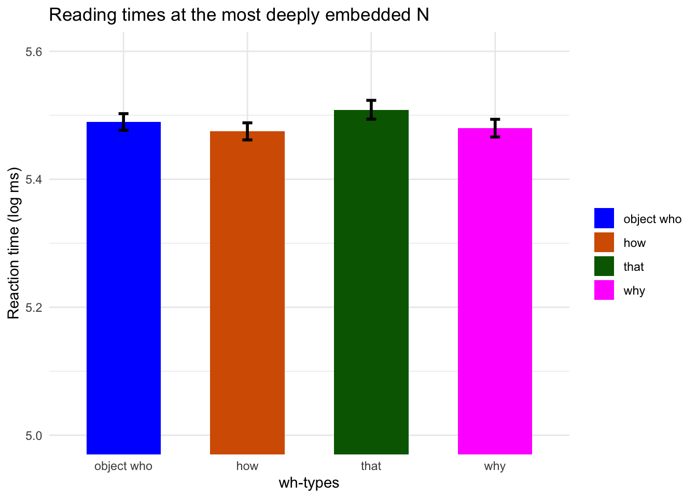
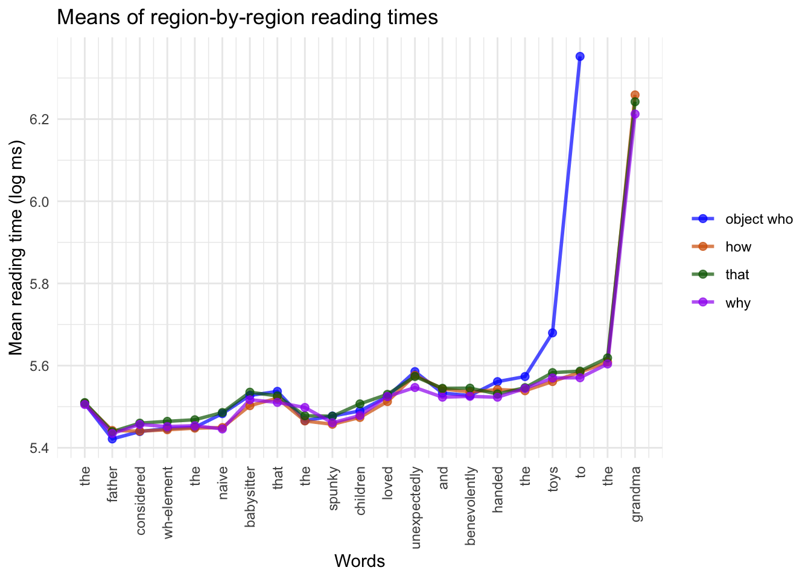

# Remove filler and practice entries# Focus on only target word for now (i.e. deepest NP in clause)data <- data.raw %>%select(!stimulus) %>%left_join(dem_data %>%select("participant_id", "age", "sex", "ethnicity", "birth_country","nationality", "language", "student", "employment"),by =join_by(subject_id == participant_id)) %>%left_join(stims.raw %>%select(item_id, target_word, stimulus), multiple ="first", by =join_by(item_id)) %>%mutate(rt =as.numeric(rt),log_rt =log(rt),whword =factor(ifelse(condition =='a', 'object who', ifelse(condition =='b', 'how',ifelse(condition =='c', 'that','why'))), levels =c("object who", "how", "that", "why"))) %>%# condition = wh-word used in sentencefilter(item_type !='filler'& item_type !='practice'& too_fast ==FALSE) %>%filter(whword !="object who"| word_index <19) %>%mutate(is_target_word = (target_word == word)) # select only deepest embedded NPwrite.csv(data, "../data/pilot_b_data.csv")
Here we only include reading time observations taken at the most deeply embedded N. Further, we eliminate all observations where the reading time < 100 ms (done via the condition too_fast == FALSE).
data_embedded <- data %>%filter(is_target_word) # select only depeest embedded NP
Description of each field:
source_file: the original file in the directory ‘data’ storing a given participant’s data
participant_id: 4-char participant id provided by Prolific
rt: reading time (log_rt: log transformed reading time)
condition: value from ‘a’-‘d’ describing type of stimulus sentence
word: word at which reading time was measured
whword: one of four values “object who”, “why”, “how”, or “that” – denotes the type of relative clause in the stimulus
# Compute mean reaction time per conditionagr <- data_embedded %>%group_by(whword) %>%summarise(n =n(), se =sd(log_rt) /sqrt(n()), y =mean(log_rt)) %>%mutate(whword =factor( whword,levels =c("object who", "how", "that", "why") ) )# Order whword elements to be object who, how, that, whyagr
# A tibble: 4 × 4
whword n se y
<fct> <int> <dbl> <dbl>
1 object who 1286 0.0131 5.49
2 how 1288 0.0133 5.47
3 that 1283 0.0147 5.51
4 why 1275 0.0138 5.48
agr %>%mutate(``= whword) %>%ggplot(aes(x =``, y = y, fill =``)) +geom_bar(stat ="identity", width =0.6, linewidth =1) +geom_errorbar(aes(ymin = y - se, ymax = y + se ), width =0.08, linewidth =1 ) +scale_fill_manual(values =c("object who"="blue","how"="#D55E00","that"="darkgreen","why"="magenta")) +coord_cartesian(ylim =c(5, 5.6)) +labs(x ="wh-types", y ="Reaction time (log ms)") +ggtitle("Reading times at the most deeply embedded N") +theme(legend.position ="none",axis.text.x =element_text(angle =20,hjust =1 ),axis.line =element_line(linewidth =1),axis.ticks =element_line(linewidth =1) ) +theme_minimal()

library(lme4)
Loading required package: Matrix
Attaching package: 'Matrix'
The following objects are masked from 'package:tidyr':
expand, pack, unpack
library(lmerTest)
Attaching package: 'lmerTest'
The following object is masked from 'package:lme4':
lmer
The following object is masked from 'package:stats':
step
Linear mixed model fit by REML. t-tests use Satterthwaite's method [
lmerModLmerTest]
Formula: log_rt ~ is_that + (1 | participant_id) + (1 | item_id)
Data: data_embedded
REML criterion at convergence: 5998.7
Scaled residuals:
Min 1Q Median 3Q Max
-2.3183 -0.4834 -0.1734 0.2020 15.5613
Random effects:
Groups Name Variance Std.Dev.
participant_id (Intercept) 6.578e-02 2.565e-01
item_id (Intercept) 3.861e-10 1.965e-05
Residual 1.779e-01 4.218e-01
Number of obs: 5132, groups: participant_id, 94; item_id, 14
Fixed effects:
Estimate Std. Error df t value Pr(>|t|)
(Intercept) 5.477e+00 2.741e-02 9.563e+01 199.810 <2e-16 ***
is_thatthat 2.881e-02 1.360e-02 5.038e+03 2.118 0.0342 *
---
Signif. codes: 0 '***' 0.001 '**' 0.01 '*' 0.05 '.' 0.1 ' ' 1
Correlation of Fixed Effects:
(Intr)
is_thatthat -0.124
optimizer (nloptwrap) convergence code: 0 (OK)
boundary (singular) fit: see help('isSingular')
Here we measure specifically the effect which Kim et al. (2025) found significant: whoobj and how vs. why at the most deeply embedded N.
# Omit that, just compare who_obj and how with whydata_no_that <- data_embedded %>%filter(whword !='that') %>%mutate(is_why =ifelse((whword =='why'), "why", "who_obj and how"))model_2 <-lmer( log_rt ~ is_why + (1| participant_id) + (1| item_id),data = data_no_that)
boundary (singular) fit: see help('isSingular')
# View resultssummary(model_2)
Linear mixed model fit by REML. t-tests use Satterthwaite's method [
lmerModLmerTest]
Formula: log_rt ~ is_why + (1 | participant_id) + (1 | item_id)
Data: data_no_that
REML criterion at convergence: 4284.7
Scaled residuals:
Min 1Q Median 3Q Max
-2.3958 -0.4855 -0.1742 0.2106 14.5422
Random effects:
Groups Name Variance Std.Dev.
participant_id (Intercept) 0.06638 0.2577
item_id (Intercept) 0.00000 0.0000
Residual 0.16586 0.4073
Number of obs: 3849, groups: participant_id, 94; item_id, 14
Fixed effects:
Estimate Std. Error df t value Pr(>|t|)
(Intercept) 5.478e+00 2.785e-02 9.805e+01 196.688 <2e-16 ***
is_whywhy -4.784e-03 1.395e-02 3.755e+03 -0.343 0.732
---
Signif. codes: 0 '***' 0.001 '**' 0.01 '*' 0.05 '.' 0.1 ' ' 1
Correlation of Fixed Effects:
(Intr)
is_whywhy -0.165
optimizer (nloptwrap) convergence code: 0 (OK)
boundary (singular) fit: see help('isSingular')
Here the effect size points in the same direction as Kim et al. (2024) – why items are read faster than who/how, but the effect is no longer significant.
# Omit why, just compare who_obj and how with whydata_no_that_no_how <- data_no_that %>%filter(whword !='word') %>%mutate(is_why =factor(ifelse((whword =='how'), "who", "how"),levels =c("who", "how")))model_3 <-lmer( log_rt ~ is_why + (1| participant_id) + (1| item_id),data = data_no_that_no_how)
boundary (singular) fit: see help('isSingular')
# View resultssummary(model_3)
Linear mixed model fit by REML. t-tests use Satterthwaite's method [
lmerModLmerTest]
Formula: log_rt ~ is_why + (1 | participant_id) + (1 | item_id)
Data: data_no_that_no_how
REML criterion at convergence: 4284.5
Scaled residuals:
Min 1Q Median 3Q Max
-2.3788 -0.4872 -0.1760 0.2105 14.5282
Random effects:
Groups Name Variance Std.Dev.
participant_id (Intercept) 0.06637 0.2576
item_id (Intercept) 0.00000 0.0000
Residual 0.16585 0.4072
Number of obs: 3849, groups: participant_id, 94; item_id, 14
Fixed effects:
Estimate Std. Error df t value Pr(>|t|)
(Intercept) 5.471e+00 2.899e-02 1.150e+02 188.740 <2e-16 ***
is_whyhow 8.021e-03 1.391e-02 3.755e+03 0.576 0.564
---
Signif. codes: 0 '***' 0.001 '**' 0.01 '*' 0.05 '.' 0.1 ' ' 1
Correlation of Fixed Effects:
(Intr)
is_whyhow -0.320
optimizer (nloptwrap) convergence code: 0 (OK)
boundary (singular) fit: see help('isSingular')
# Omit why, just compare who_obj and how with whydata_no_that_no_how <- data_no_that %>%filter(whword !='word') %>%mutate(is_why =ifelse((whword =='why'), "why", "who_obj"))model_3 <-lmer( log_rt ~ is_why + (1| participant_id) + (1| item_id),data = data_no_that_no_how)
boundary (singular) fit: see help('isSingular')
# View resultssummary(model_3)
Linear mixed model fit by REML. t-tests use Satterthwaite's method [
lmerModLmerTest]
Formula: log_rt ~ is_why + (1 | participant_id) + (1 | item_id)
Data: data_no_that_no_how
REML criterion at convergence: 4284.7
Scaled residuals:
Min 1Q Median 3Q Max
-2.3958 -0.4855 -0.1742 0.2106 14.5422
Random effects:
Groups Name Variance Std.Dev.
participant_id (Intercept) 0.06638 0.2577
item_id (Intercept) 0.00000 0.0000
Residual 0.16586 0.4073
Number of obs: 3849, groups: participant_id, 94; item_id, 14
Fixed effects:
Estimate Std. Error df t value Pr(>|t|)
(Intercept) 5.478e+00 2.785e-02 9.805e+01 196.688 <2e-16 ***
is_whywhy -4.784e-03 1.395e-02 3.755e+03 -0.343 0.732
---
Signif. codes: 0 '***' 0.001 '**' 0.01 '*' 0.05 '.' 0.1 ' ' 1
Correlation of Fixed Effects:
(Intr)
is_whywhy -0.165
optimizer (nloptwrap) convergence code: 0 (OK)
boundary (singular) fit: see help('isSingular')
agr <- data %>%group_by(word_index, whword) %>%summarise(y =mean(log_rt))
`summarise()` has grouped output by 'word_index'. You can override using the
`.groups` argument.
words <-c("the","father","considered","wh-element","the","naive","babysitter","that","the","spunky","children","loved","unexpectedly","and","benevolently","handed","the","toys","to","the","grandma")agr %>%mutate(``= whword) %>%ggplot(aes(x = word_index, y = y,color =``,group =``)) +geom_line(linewidth =1, alpha =0.7) +geom_point(size =2, alpha =0.7) +scale_color_manual(values =c("object who"="blue","how"="#D55E00","that"="darkgreen","why"="purple")) +theme(axis.text.x =element_text(angle =90,vjust =0.5,hjust =1 ) ) +scale_x_continuous(breaks =seq_along(words) -1,labels = words ) +ggtitle("Means of region-by-region reading times") +labs(x="Words", y="Mean reading time (log ms)")

Cross-cut data by age
# Create dummy value (age < 35), where 35 is the median ageagr <- data %>%filter(!is.na(age)) %>%mutate(is_old =factor(ifelse(age <35, "Younger than 35", "35 or older"),levels =c("Younger than 35", "35 or older"))) %>%group_by(is_old, word_index, whword) %>%summarise(y =mean(log_rt))
`summarise()` has grouped output by 'is_old', 'word_index'. You can override
using the `.groups` argument.
agr %>%mutate(``= whword) %>%ggplot(aes(x = word_index, y = y,color =``,group =``)) +geom_line(linewidth =1, alpha =0.7) +geom_point(size =2, alpha =0.7) +scale_color_manual(values =c("object who"="blue","how"="#D55E00","that"="darkgreen","why"="purple")) +theme(axis.text.x =element_text(angle =90,vjust =0.5,hjust =1 ) ) +scale_x_continuous(breaks =seq_along(words) -1,labels = words ) +ggtitle("Means of region-by-region reading times, split by age") +labs(x="Words", y="Mean reading time (log ms)") +facet_wrap(vars(is_old))